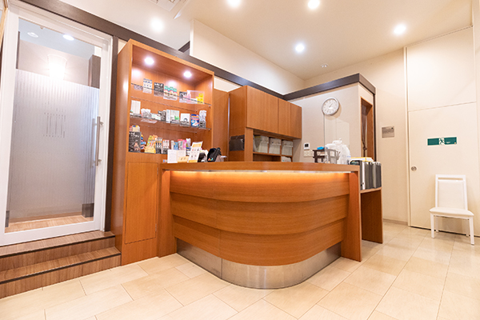
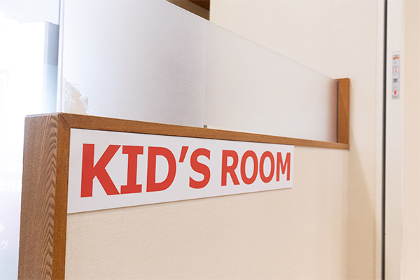

クリニック紹介CLINIC INFORMATION
患者様の「あったらいいな」に対応し、地域医療に貢献できればと思いますので、下妻市の皆様、イオンモール下妻にお越しの皆様、何卒よろしくお願いします。
院内紹介
受付・待合室

キッズルーム

当院にはキッズルームがあります。小さなお子様が歯科医院に遊びに来る感覚で通院できるようにキッズルームを設けました。おもちゃやDVDがありお子様を退屈させません。
お子様の治療だけでなく、親御さんの治療の付き添いにもご利用ください。また、小さなお子様をお持ちの親御さんが治療の際に、このスペースでお子様を遊ばせておくこともできます。受付の見える位置にありますので、安心してお子様を遊ばせておけます。
カウンセリングルーム

治療の進め方や期間などは患者様が一番に不安に思う部分であると考えます。レントゲン写真を大型のモニターに表示し、写真だけではわかりにくい部分はア ニメーションにてわかりやすくご説明いたします。また、カウンセリングルームは個室になります。プライバシーをお守りしますので、何なりとご質問ください。
診察台・ユニット
メティケア歯科クリニック下妻では、歯科治療の際に使用する「清潔さ」を重視したユニット（診療台）です。患者様とのコミュニケーションを大事にしながら、丁寧で安心安全な診療を行なっていきます。
また、歯科用ＣＴスキャンを導入しています。患者様の症状に対して、今までより確実性の高い診断や治療が可能になります。レントゲン撮影などでは見えない部分が見え、病状の早期発見に役立ちます。
設備案内
ダイアグノデント
メドクターがプロの目で直接歯を見て発見できる虫歯は２０％といわれています。同様にレントゲンを撮っても５０％の虫歯しか発見できないのです。
ダイアグノデントは、人の目では発見することの出来ない虫歯を発見し、その虫歯の進行度まで正確に調べることが出来ます。これにより、虫歯の早期発見、早期治療を可能にします。更には虫歯の進行度合いが削る必要があるのか、あるいは薬を塗るだけの予防処置で対応できるのかも数値によって判断することが可能です。
歯科用CT
CTとは（Computed Tomography）コンピュータ断層撮影をする機器のことで、患部を断層撮影し見えない部分を立体的に見ることで、様々な治療の的確性を増し、より安全で緻密な治療に役立てることができます。
通常の2次元レントゲンでは見ることができなかったインプラントの診断、歯周病による骨欠損の状態、顎関節、歯根の膿、親知らず、上あごの炎症、神経の走行などが診断できます。
CTで問題視される被曝量も、医科用ＣＴの100分の1という低被曝量で安全性が高い機器を使用しております。
デジタルレントゲン
当院では正確・迅速な診断、患者様の安全への配慮として、レントゲンをデジタル化いたしました。従来のアナログのレントゲンだと、撮影から現像まで５分～１０分ほどの時間がかかっていましたが、デジタルレントゲンを使うことで、撮影終了と同時に画像の確認ができます。
また、被爆線量がアナログのレントゲン機械と比較して1/15にまで減らすことが実現。人体に悪影響を及ぼすリスクがかなり少なく、尚且つ画像が鮮明で診断もしやすくなっています。
デンタルフラッシュ
カウンセリング用のアニメーションソフトです。クオリティの高い3Dアニメーションで治療の工程を説明いたします。
今まで言葉では伝わりにくかった治療内容や検査方法、術後説明、予防等を簡単に分かりやすく！これまでにない解りやすい説明が可能になりました。
プラズマクラスター付加湿空気清浄機
クリニック内のホコリ、ＰＭ2.5、ニオイを察知して快適な診療空間の一助になっております。専用アプリにより現在の診療室内での空気の状態の把握はもちろん、Wi-Fi接続で外気の状態に合わせて空気のコントロールをしてくれます。
口腔内バキューム
口腔外バキュームというのは名前の通り口の外にある大きな吸引装置のことです。診療室には様々な細菌や、治療することによって金属や歯の削りカスが浮遊しています。口腔外バキュームはこれらの有害な浮遊物を患者様の口元で吸引することによって診療室内をクリーンに保ち院内感染のリスクを減らす役割があります。
皆様がよりクリーンな環境で過ごせるよう口腔外バキュームを導入しております。
AED
歯科医院を訪れるだけで緊張してしまう方は多くいらっしゃいます。緊張すると、脈が速くなったり血圧が上がってしまう…。つまり通常の状態よりも心臓疾患を起こす可能性が高くなるということです。その不慮の事態が当クリニックの待合室や診療室内でおこるかもしれません。万が一のときに対応できるよう、当クリニックではAEDを導入することといたしました。
これにより歯科治療のなにが変わるというものではありませんが、来院された皆様に安心して治療を受けていただけるものと思っております。
オーラスターウォーマー
電動の注射器を使うことで最も痛みの少ない速度で、薬液を注入することが可能です。
また、薬液を人肌くらいに温めることで、注入時の痛みをさらに軽減することが可能です。